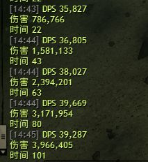
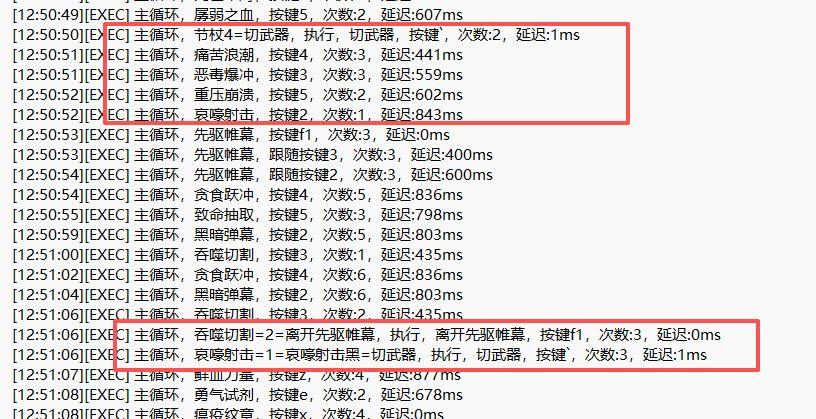
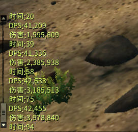
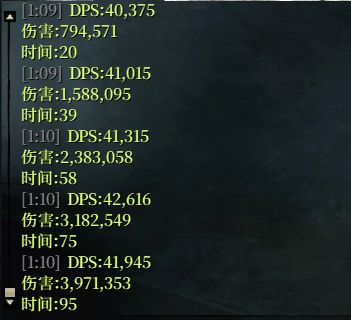
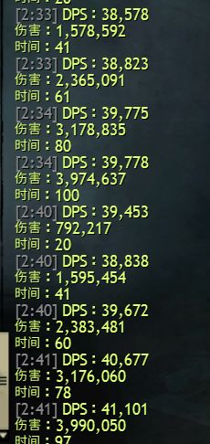

新版症状先驱（美服延迟230）直伤食物扳手灌注（穷没换没有）35.8k-39.2k
鲜血力量，瘟疫纹章，风险试剂，勇气试剂，痛苦浪潮，恶毒爆冲，先驱帷幕|吞噬切割，致命抽取，贪食跃冲，吞噬切割=2=离开先驱帷幕，吞噬黑暗，死亡束缚，先驱帷幕，孱弱之血，判断节杖=切手枪，勇气试剂，鲜血力量2，承诺试剂，鲜血力量1，风险试剂，承诺试剂，怨恨纹章，恶毒爆冲，痛苦浪潮，重压崩溃，哀嚎射击，哀嚎射击=1=切节杖，普攻||
鲜血力量,7,883|瘟疫纹章,8|风险试剂,9,399|勇气试剂,0,399|痛苦浪潮,4,750|恶毒爆冲,3,750|先驱帷幕,f1,0,3,500,2,836|吞噬切割,3,500,2,836|致命抽取,5,850|贪食跃冲,4,837|离开先驱帷幕,f1,0,2,840|吞噬黑暗,3,607|死亡束缚,2,759|孱弱之血,5,566|判断节杖|切手枪,`,200,2,840,,,,,,,,,,,,,,,触发,1,20000|鲜血力量2,7,883,8|承诺试剂,6,800|鲜血力量1,7,883|怨恨纹章,9,637|重压崩溃,5,605|哀嚎射击,2,840|切节杖,`,150,3,607,2,759,,,,,,,,,,,,,触发,1,20000|普攻
[&DQgnNTI3QB/nGqIAgAAAAPUAAADUGgAA6BoAAAAAAAAAAAAAAAAAAAAAAAAENgBmAFYALwAA]
全套毒蛇 手枪 火炬 节杖 匕首 分别是恶魔 折磨 恶魔 大地

鲜血力量正常取色，鲜血力量1取右上角2数字，鲜血力量2取右上角1数字，判断节杖取节杖组4技能任意位置
只毛了治疗，适合十人本
国服延迟低，食物扳手灌注对了 打个42感觉没问题。取色问题留言我会回复，延迟自行调整不打断不穿插普攻 别太极限即可
没测试实战和启停
评论列表（46）
手枪进入帷幕，退出帷幕应该也是手枪，但是会切到节杖，要怎么设置

@666 退出帷幕会跟随一个手枪2，是不是延迟问题导致跟随的手枪2没打出来 直接打的普通判定的手枪2呢？ 可能是这个原因，解决办法就是调整f1和跟随手枪2的延迟，或者把=1切节杖改成=2
@kpd 感谢大佬解惑，应该是延迟的问题按
@666 帷幕2=3=退出帷幕，退出帷幕跟随2，加550延迟，这样写退出后固定550毫秒延迟，可以等图标完全显示出来，如果还是不行，加到880
@melis 谢谢大佬，设置好后目前稳定在42k

起手打完 进入帷幕打个2直接出来 然后切节奏放技能了，手动43.5 用这个37
@.... 手动43.5的话 没必要用宏了...你这个问题我真不清楚 因为唯一判断出帷幕的地方就是打两个2出帷幕 具体你是什么情况我无法判断
@kpd 好像是起手问题 我朋友整了也是一样的 第一次进帷幕打个二直接出来了 没有二次 后边又没问题
@... 是软件版本的问题吧，判断出帷幕没有错误的话是不太可能直接出去的，肯定是软件本身或者你按键设置的问题，我只设置了一个退出帷幕的判断标准，在没有接触你的电脑之前实在是不好判断
为什么瘟疫纹章一次都不释放？取色多次都没用
@L 因为瘟疫纹章是跟随在第二次鲜血力量的，所以不会单独释放
为什么我的不切节杖啊
我看了循环没问题 我只能打30K
感谢大佬分享。

@纸 0灌，普通食物/扳手
@纸 能分享一下你的循环吗
@CC 就是上面的循环
@纸 能分享下国服延迟的导入代码吗
@寒 就是上面的循环
@纸 血书同求国服延迟，感谢大佬
@π 就是上面的循环
大佬们这个第二行的这些技能设置是放哪里，有教程吗？
@sky 啥意思 有点没听懂 第二行是啥意思
@kpd 就是这一段，鲜血力量,7,883|瘟疫纹章,8|风险试剂,
@sky 全部复制，然后直接导入就行了，格式是软件自己识别的格式
@kpd 感谢大佬 美服210延迟 41K

大佬，帷幕3接帷幕2，然后帷幕3=2出帷幕，最后出帷幕前的帷幕2读不完被打断丢伤害有办法优化吗？
@L 帷幕2 勾选纯黑跳转，必须等变黑才切帷幕。
@L 帷幕2 提高一下延迟，但是要保证2 和3 之间不要插普攻，还有可能是你3技能跳的太远了，2技能来不及放
先感谢大佬的分享！ 有几个取色麻烦问一下，鲜血1、鲜血2是分别取右上角1和2吗，切节杖和手枪，是不是取切武器箭头，判断节杖取那个位置，还有致命虫群能不能在鲜血后释放？谢谢！
@独木成林 鲜血1、鲜血2是分别取右上角1和2，切节杖和手枪，是取切武器箭头，致命虫群不放，判断节杖是取的致命虫群的位置
@kpd 感谢 感谢！
@独木成林 技能全部释放，循环也正常，普通食物扳手，0灌注 为啥最高才29k。。。。。。。。差的也太多了 郁闷
@独木成林 你更新了吗
@kpd 更新了呀 大佬，软件最新 的，鲜血1，2 重新取的色，现在循环我看挺正常的就是伤害上不去。。
@独木成林 我说错了，取色鲜血力量正常取色，鲜血力量1取右上角2数字，鲜血力量2取右上角1数字 我说反了
@独木成林 我说的是你游戏更新了吗 ，新版本先驱加强了
@独木成林 其实没那么麻烦 如果是2段伤害，直接添加一个内置cd，设置成 鲜血冷却的时间，放完第一段，第二段会等同步在放，不会连着放。
@melis 感谢M大。嘿嘿
鲜血力量2 是一次没用的时候 鲜血力量1 就是用了一次 取色图标的 2 和1 是这样吗
@233 技能1，技能1=1=技能X，技能1放过就会记录次数，然后用这个次数去放其他技能。
@233 对
@233 我说错了，取色鲜血力量正常取色，鲜血力量1取右上角2数字，鲜血力量2取右上角1数字 我说反了
判断节杖 没理解 怎么判断哦
@233 节杖4不在循环，取色取节杖4的任意位置，他就明白是节杖了
@233 杖2=1=切手枪，一样的，或者新版杖2>>1500=切手枪